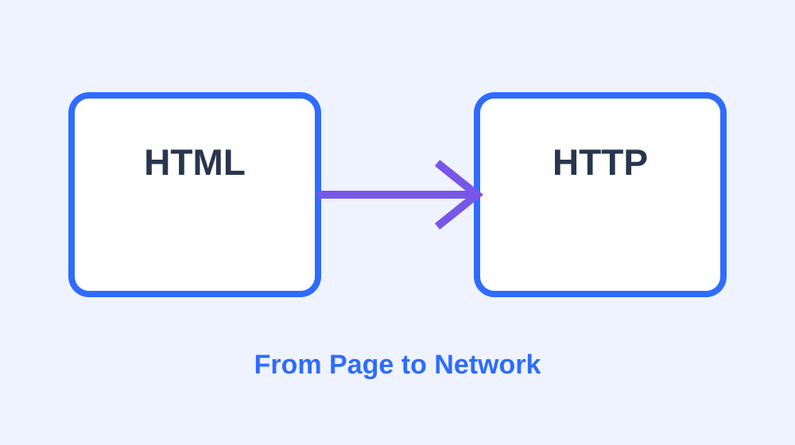

BLOG / WEB LEARNING
从一个静态网页开始理解 Web

这次计算机网络实验让我从“使用网页”走到了“制作网页”。表面上看， HTML 负责内容、CSS 负责样式、JavaScript 负责交互；但真正把页面放到网络上以后， 才会自然地追问：浏览器到底如何拿到这些文件？服务器又通过什么协议把它们返回给我？
1. HTML 是页面的骨架
HTML 的作用不是把页面“变漂亮”，而是描述页面结构。标题、段落、图片、链接， 都是浏览器能够理解的结构化内容。这个主页中的导航栏、项目卡片、图片与超链接， 都由 HTML 组织起来。
2. CSS 让结构变成视觉体验
CSS 把布局、字体、间距、颜色与响应式设计从 HTML 中分离出来。
这样调整视觉风格时，不需要反复修改正文结构。本项目把主要样式统一放在
assets/css/main.css 中，主页与博客页共同复用。
3. JavaScript 只做必要的增强
这个实验并不依赖复杂前端框架。JavaScript 只负责明暗主题、移动端导航、 滚动出现动画等少量增强。即使脚本没有加载，网页的核心内容仍然能够阅读。
4. 发布后，网页才真正进入“网络”
本地双击 index.html 可以看到页面，但这还不是公开网站。
当网页部署到 GitHub Pages 等静态托管平台以后，浏览器会通过 HTTP/HTTPS 请求这些资源。
此时就可以使用浏览器开发者工具，在 Network 面板查看实际使用的协议版本。
5. 从 HTTP/1.1 到 HTTP/2、HTTP/3
本次实验 PPT 从 HTTP/1.0、HTTP/1.1 讲到 HTTP/2 与 HTTP/3。 把网站真正部署之后，我可以直接观察托管平台最终协商使用了哪一个版本， 这样协议就不再只是课件上的名词，而是浏览器里能够看到的真实行为。
6. 一个小实验带来的连接
做完这个页面以后，HTML/CSS 与计算机网络不再是两块完全分开的知识： 页面是应用层内容，HTTP 是传输这些内容的应用层协议，而 TCP/QUIC、IP 与链路层继续在下面完成通信。 一个简单网页，恰好把“应用”与“网络”连接了起来。